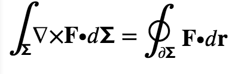
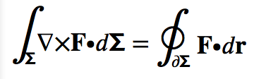

HTML as TeX replacement
Interesting condemnation of Web typography by comparison with TeX at https://t.co/Nfl1WZQGtM - Web people, are we working on this stuff?
— Stuart Langridge (@sil) November 6, 2015However Phillips’s idea of HTML is not quite up to date; he ignores how CSS and SVG combine with HTML to add richer typography. First he complains about hyphenation and ligatures. Hyphens are in CSS Text Level 3 and are implemented in many browsers though not yet Chrome. Ligatures are in CSS Fonts Level 3 and supported in many browsers too — Apple has done it for years. Here we have the TEΧ example, live rendering from your browser, and what Safari Mac made of it. Note the hyphenation and the ligatures. Also, I took out the spaces around the em-dashes that Lee Phillips oddly put in.

Next Phillips takes on mathematical equations. His first example is eiπ = −1. Note how that was displayed fine inline, just by using <sup>, which has been in HTML for years, along with <sub> which I used to show the TEΧ e. Writing in utf8 means I don’t need a special sequence like \pi for π.
Phillips is right that doing more complex equation layout in pure HTML is difficult. Fortunately, we do have SVG for arbitrarily precise positioning of text and graphics. I took his example of Stokes equation, and put it through Troy Henderson's LaTeX Previewer (which I found by googling 'tex to svg'). Here we are:
Here is the elementary version of Stokes' Theorem:

Now, the SVG there, though scalable, is not ideal - it renders as paths, not characters. If I use SVG text, I can get it selectable:
Here's the SVG code for that. You can see the tighter control.
<svg xmlns="http://www.w3.org/2000/svg" width="200" height="44" >
<text x="0" y="30" style="line-height:125%; font-size:18px; font-family:Serif;">
<tspan style="font-size:36px;">∫</tspan>
<tspan style="font-size:12px;" baseline-shift="sub">𝝨</tspan>
∇×𝐅∙𝑑𝝨 = <tspan style="font-size:36px;">∮</tspan>
<tspan style="font-size:12px;" baseline-shift="sub" dx="-7px">∂𝝨</tspan> 𝐅∙𝑑𝐫
</text>
</svg>
Here is how Chrome Mac and Safari Mac render this:

However, you may not see all the glyphs, as I am using the special unicode characters for Mathematical letters, and your browser or device may not have those.(Update - I included the STIX font so you should see them now). Here's a version with ordinary latin and greek letters:
Phillips may be superficially right that HTML doesn't give as much typographic control as TEΧ, but when you compare to the full web suite, including CSS and SVG, that conclusion can't be sustained; indeed even his point about macros could be solved by using javascript as well, though I prefer my web pages to be declarative.
That said, many of the CSS specs I have linked to are still being edited, so this is a good time to try out authoring your mathematical papers that way and possibly proposing changes.